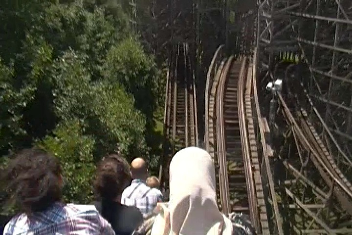
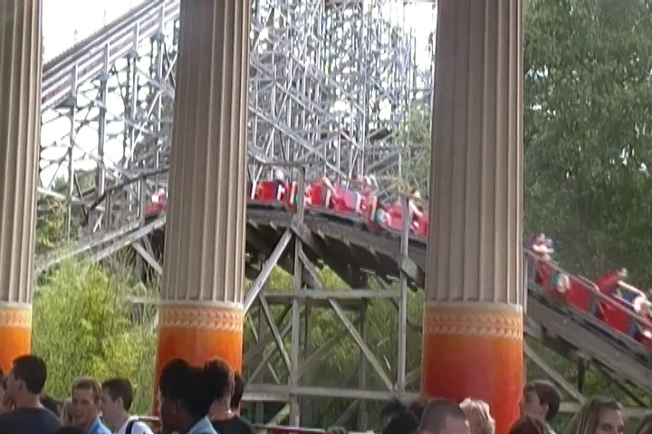
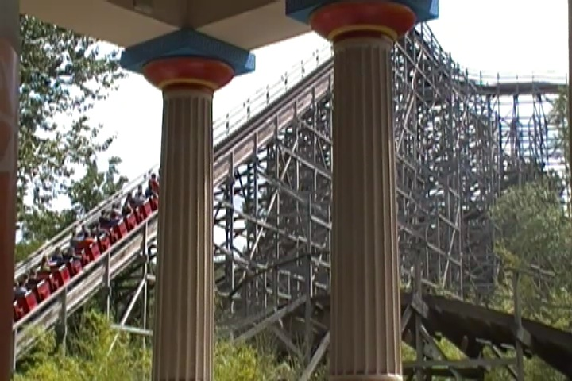
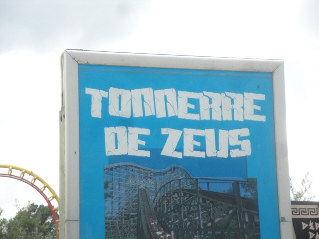

| |
Tonnerre de Zeus Review

We're here at Parc Asterix. Today we're going to review Tonnerre de Zeus, the park's wooden coaster. Now, this coaster has a bunch of mixed reviews. To a lot of enthusiasts, this is one of the best wooden coasters in all of Europe, if not in the entire world. However, I've also heard a lot of people say that the ride is incredibly overrated and that this ride used to be an amazing ride, but it's lost its touch over the years. So basically, it is the Ghostrider of Europe. And honestly, that's a pretty damn good way of describing the ride. It very much reminds me of woodies like Ghostrider and Excalibur. Both of which are really fun rides, but you can tell that they used to be better. I TOTALLY believe all the claims that this used to be an AMAZING world class coaster that hasn't been maintained well. But anyways, let's get reviewing this ride. We get in the cars, pull down the lapbar, buckle the seatbelt, and we're off! We roll around a turn and start climbing the lifthill. There's not much of a view, except for the wooden mess of track that is the ride to your right. Fast foreward, we reach the top, head around a turn, and head down the first drop. It's a really fun first drop, and if you're sitting in the backseat, then it provides us with some good airtime. This leads us straight into a tunnel shaped as a mouth. Oh joy. We get eaten on this ride. TAKE THE DIGESTIVE TRACK!!!! We fly out of the tunnel, up a small hill, and sadly, there's not much airtime here. We then head around a turn, and get some nice laterals. We then head down a small drop that gives us a small little pop of airtime. We then head up another hill, and sadly, no airtime this time. We then head around a small turn, get some laterals, down a small drop, get a little more airtime. We then head around another hill and head into a turnaround. And this of course, leads us straight into a big helix. So for this part of the ride is my favorite part. It's one of the parts that I still found to be really agressive, as it's just a bunch of constant laterals. We then head down a small drop, and sadly, there's no airtime to go with it. But hey. I'm still having fun. And don't worry. Some airtime will be coming up soon. As such, we get two airtime hills in a row. Neither of which are crazy or anything, but we do get some mild floater air on these hills. We then head up another hill, before heading around another tight turn. Hey. More laterals. Fine with me. We head around underneath the track, getting some nice headchoppers before heading down another small drop, heading into the second half of the ride, right alongside the original part of the ride we went through earlier. Sadly, there won't be any dueling here. But hey. No big deal. We then go through three bunny hops, all with some really nice floater air, and the final bunny hop also has a couple laterals. We then head around another helix, getting some more cool laterals. We then head up a small hill, go around a couple turns, and just sort of meander around. We dip down, hop over the line, and sadly, there's no airtime here. At this point, the ride is just sort of slugging on. It's time for the ride to end. Yeah, it's not often that I say this, but it totally applies here. We then head through one final helix, which does have a little bit of laterals, but not a ton. And sure enough, we now head straight into the brake run. So yeah. That's Tonnerre de Zeus. Far from the craziest wooden coaster ever. But it's still a really fun coaster. But for as much as I thought it was a fun ride, I could totally see a much better wooden coaster just sitting inside, waiting to be released. I know that with a good re-tracking and proper maintanence, this can be a totally wild and out of control wooden coaster. I hope it winds up running that way when I come back. But either way, I'd definetly recommend giving it a ride when visiting Parc Asterix. It really is a fun ride.
7/10
Location: Parc Asterix
Opened: 1997
Built by: Custom Coasters
Last Ridden: June 30, 2012
Tonnerre de Zeus Photos



Home
|